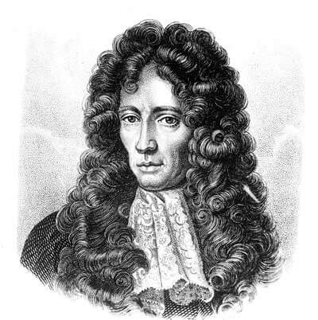

1627 - 1691 • İlk Modern Kimyager
Robert Boyle, İrlanda'nın Lismore kentinde, çok zengin bir kontun oğlu olarak doğdu. Maddi durumu sayesinde en iyi eğitimi aldı ve bilime odaklandı. O dönemde insanlar hala simyacıların "4 element" (ateş, su, toprak, hava) teorisine inanıyordu. Boyle, deney yapmadan kabul edilen eski inanışlara karşı çıktı. Onun için bilim, sadece tartışarak değil, laboratuvarda deney yaparak doğrulanmalıydı.
Hava pompasıyla yaptığı deneylerde, gazların basıncı ile hacmi arasında ters bir orantı olduğunu keşfetti. Yani bir gazı sıkıştırırsanız (hacmini azaltırsanız), basıncı artar. Bugün lisede öğrendiğimiz meşhur P₁V₁ = P₂V₂ formülü ona aittir. Bu yasa, havanın boşluklardan oluştuğunu ve atomik bir yapıya sahip olduğunu gösteren ilk kanıtlardan biriydi.
1661'de yayınladığı başyapıtı "The Sceptical Chymist" (Kuşkucu Kimyager) ile simyayı bilimden ayırdı. Bu kitapta ilk kez modern "element" tanımını yaptı: "Elementler, kendisinden daha basit maddelere ayrılamayan saf maddelerdir."
Boyle, modern kimyanın kurucusu sayılsa da, hayatı boyunca metalleri altına çevirmeye çalışan simyacılarla (özellikle Isaac Newton ile) gizlice mektuplaşmıştır. Bilimin henüz emekleme aşamasında olduğu o dönemde, kimya ile simya arasındaki çizgi düşündüğümüzden daha bulanıktı.
Boyle, deney sonuçlarını titizlikle kaydetme ve başkalarıyla paylaşma geleneğini başlattı. Ondan önce simyacılar bulgularını şifreli dille saklarken, Boyle "Bilgi paylaştıkça çoğalır" ilkesini benimsedi.